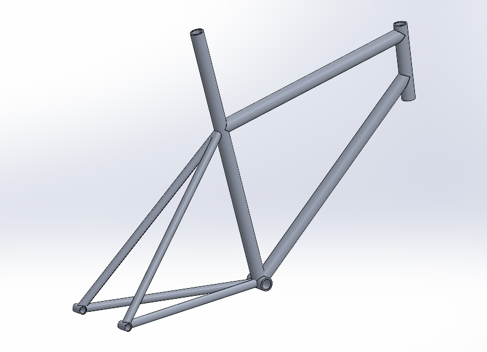
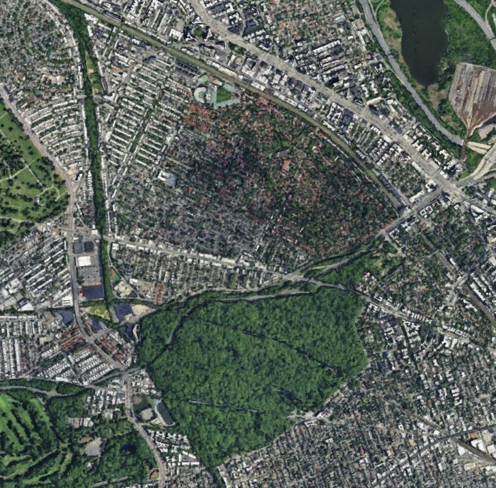

Projects
Each project opens into a detailed case study with technical goals, methods, tools, metrics, visuals, and final outcomes.

NASA L’SPACE Thermal Control System
A Mars mission thermal architecture built around active heating, passive heat routing, radiator rejection, redundancy, procurement, and verification planning.
Open project
Garage Door Mechanical System Design
A complete 8 ft × 8 ft residential garage door system validated through stress, fatigue, deflection, material, and motion analysis.
Open project
6-DOF Robotic Arm Analysis
A kinematic, dynamic, trajectory, and control study of an anthropomorphic arm with a spherical wrist for a reach, grasp, and pick-up task.
Open project
Lightweight Hybrid Bicycle Design
A low-cost urban bicycle concept validated through CAD modeling, SolidWorks simulation, beam checks, material selection, and cost analysis.
Open project
Urban Climate Analysis
An environmental analysis of Forest Hills/Kew Gardens connecting land cover, traffic, surface temperature, air quality, and heat-flux behavior.
Open projectGripWell Assistive Tremor-Stabilizing Device
A rapid-prototyped handheld assistive device that used Arduino, gyroscope sensing, servo response, and a 3D-printed final design to stabilize hand tremors.
Open project